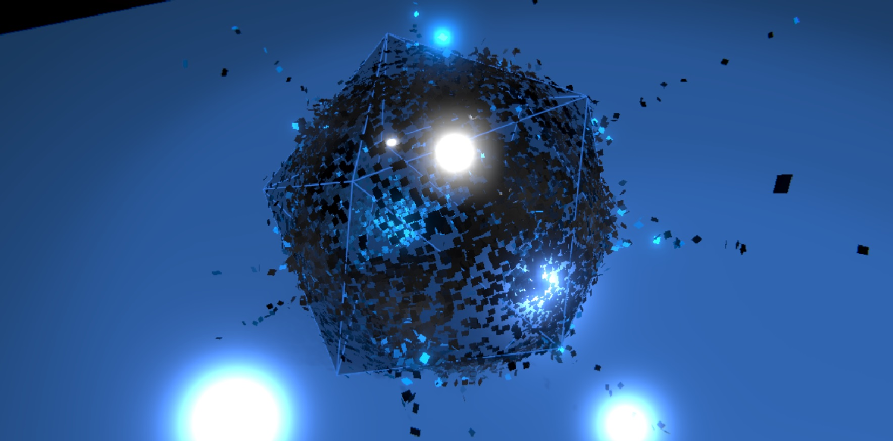
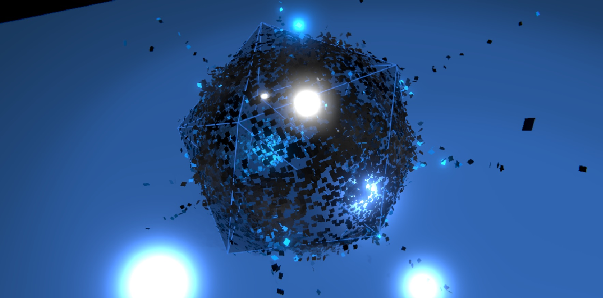

Kinexperience
Abstract
Modern choreographic composition is strongly influenced by dance theorist Rudolf Laban. He explored the field of Choreutics with the concept of Kinesphere, an icosahedron representing the natural boundaries of our bodily space in which motion happens.
Kinexperience immerses the public right into Laban’s dance framework by wrapping a full human-sized virtual icosahedron around the person’s body. The icosahedron reacts to the motion of hands and feet triggering visual effects like trace lighting or particles explosion, giving the dancer feedback and insight into its own spontaneous practice.
Showcase
 



Installation
3D creation software -> Unity (version 2018.0.2f)
Body motion detection -> Kinect v2
Particle system -> KAPPS (Theoriz Studio)
VR headset -> HTC Vive
Dancefloor experimentation -> LABLAB
Dates
Sprint 1 > from june 5th 2018 to june 19th 2018
Open LABLAB day > june 12th 2018
Sprint 2 > from jan. 14th 2019 to feb. 8th 2019 at Subsistances/LaboNRV - 4 weeks residence
Full stage setup > from february 4th 2019 to february 8th 2019 at Subsistances
About
Ariane Cassimiro
Ariane Cassimiro explores relations between dance and digital arts by positioning the public at the very heart of her creations.
With a broad experience in live performance, she started a new projects line in 2016 with «Là», in which images are generated out of the person’s body motion.
In an effort to widen the public aesthetical experience, she focuses on virtual and augmented reality to create performance mixing digital arts and dance.
http://arianecassimiro.wixsite.com/inicio
Alex Andrix
Alex Andrix uses science in all his creations. Passionate about fundamental physics and particle systems, he started in 2014 with a project of voice-driven artwork generation using web languages. Meeting art director Jean-François Robin in 2017, he co-developed VR project _Transition presented at Mirage Festival in Lyon the following year.
Focusing on bringing aesthetics to science and scientific perspective to digital arts, he currently works with Laboratoire de Physique ENS de Lyon on showcasing plasma equations in virtual reality.
http://alexandrix.com/
Links
Note: the team gathered again mid-January 2019 for the second sprint, including tech-artist Yves Brozat. After 2 weeks of work, due to divergence of opinion on artistic choices, working methodology, and others, I decided to quit the project. A mid-term report on our first two weeks of residency is available (FR): HERE (yet to come)
Report on the creation process during Sprint 1 (FR): HERE
Link 1: here
Link 2: here
Link 3: here
Link 4: here